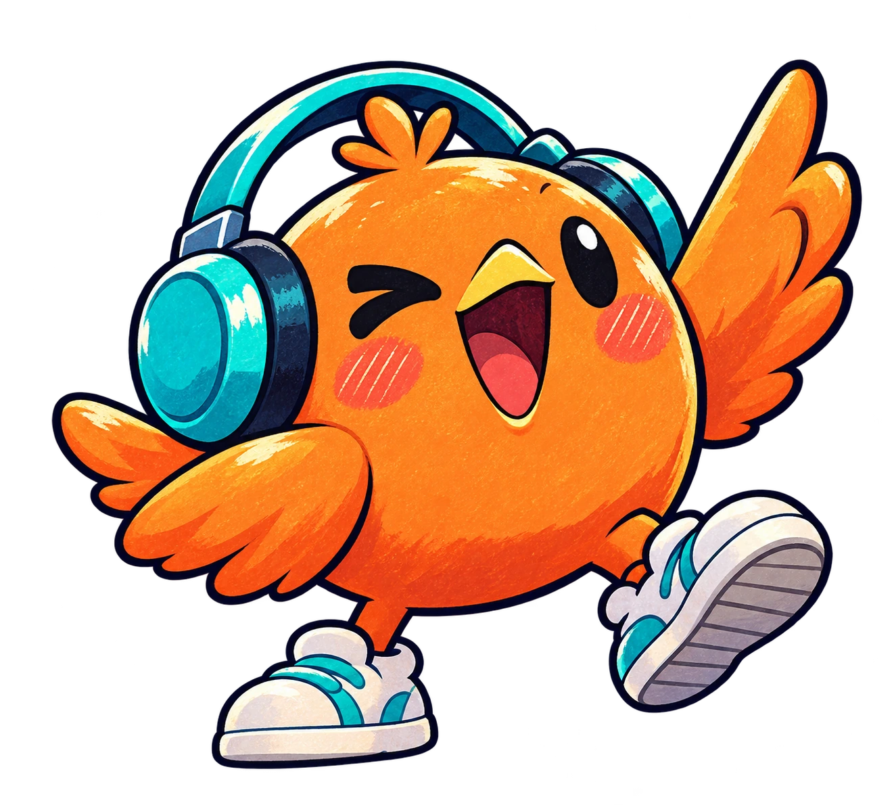

あたまも、からだも、おどりだす。
九九
九九
ジャックポット✦
えらんで、リズムで、ぴたっ！
きみの「わかった！」が、音になる。
7のだん9もん ・ 約70秒★
LET’S
GROOVE!
GROOVE!

MC ビートくんKUKU JACKPOT ✦ EVERY ANSWER IS A BEAT
1 こたえをえらぶ→2 3・2・1 をきく→3 ぴたっ！で とめる
PRACTICE01 / 09
せいかい0/9
いっしょに
ノリノリ！
MC BEATノリノリ！
★ななのだん、いくよ！★
✦
7
×?
=?
✦まずは音をきいてね
FEEL THEBEAT!144 BPM
こたえをえらんで、まってねリズム ★ 0
321ぴたっ!♪
九九のせいかい0/9
答えをおぼえた数
リズムにぴたっ！0/9
合図にあわせられた数
声に出して、もういちど！ タップすると声がきけるよ
きろくは、このブラウザに保存されます。